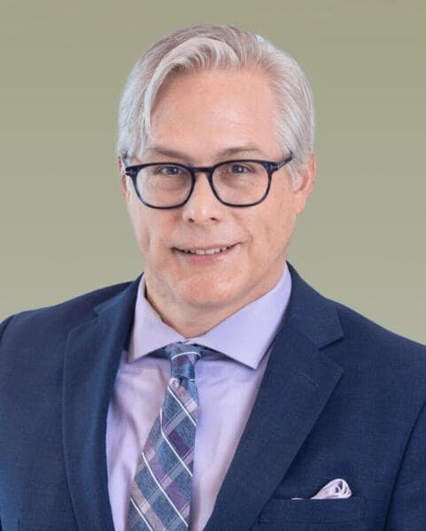
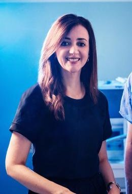

Mayo Clinic Florida
Jacksonville, Florida, USA
WF

W. David Freeman, MD
Professor of Neurology and Neurosurgery
Imaging AI and volumetrics
Imaging AI and volumetrics
GC

Giselle Coelho, MD, PhD
Pediatric Neurosurgeon
ASTRAL Program Director
ASTRAL Program Director
Coordinates the network and builds the open, in-browser CT measurement tools, drawing on the SAHVAI Lab's work on head CT volumetrics. Dr Coelho's work centers on pediatric neuroendoscopy and realistic simulators for training surgeons.